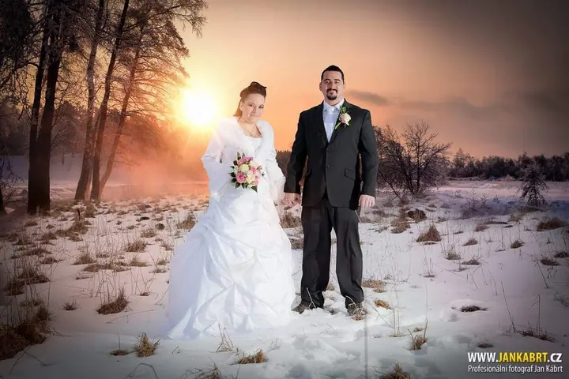
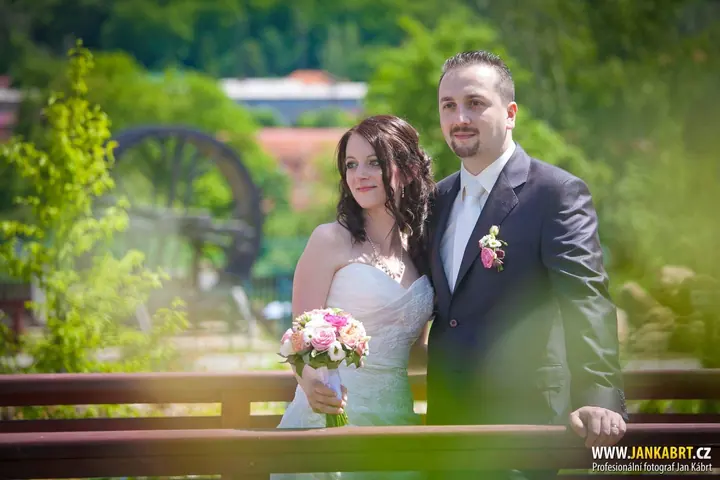
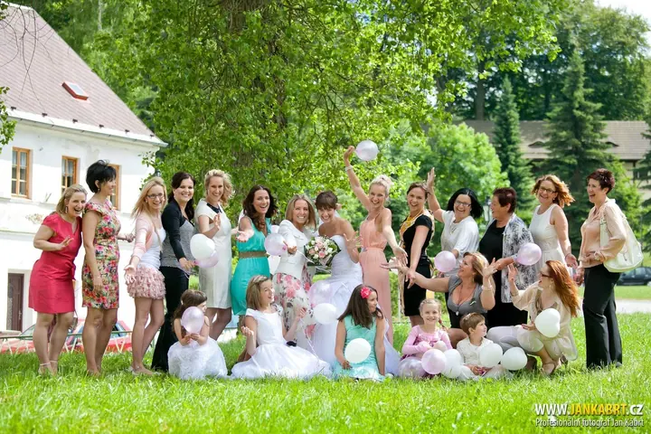

jedna
Svatební fotografie
Fotím svatby na zámcích, statcích, farmách i v kostele od Karlových Varů po Plzeň. Rád bych, aby pro Vás focení bylo zábavou a fotky Vás nadchly.

Svatební a rodinný fotograf · Karlovy Vary, Sokolov, Cheb

Jmenuji se Jan Kábrt a už 12 let fotím hlavně svatby, rodiny a plesy na Karlovarsku a Plzeňsku. Rád bych, aby pro Vás focení se mnou bylo zábavou a abychom spolu vytvořili fotky, ke kterým se budete rádi vracet.
Více o mně
Co dělám
jedna
Fotím svatby na zámcích, statcích, farmách i v kostele od Karlových Varů po Plzeň. Rád bych, aby pro Vás focení bylo zábavou a fotky Vás nadchly.
dvě
Fotím v parku, v přírodě nebo u Vás doma, když nechcete nikam jezdit. Hodina focení v exteriéru s 20 upravenými fotkami stojí 4 000 Kč.
tři
Fotím maturitní plesy, konference a další akce. Připravím i fotky na maturitní tablo.
Kromě fotek natáčím a stříhám i video. Svatbu tak můžete mít zachycenou i v pohybu.

Focení se mnou má být hlavně zábava.


Za objektivem
Jsem především fotograf, který miluje svou práci. Moji klienti říkají, že je to na mně vidět. Baví mě zachycovat chvíle, které díky fotkám zůstanou. Svatby fotím od Karlových Varů, Sokolova a Chebu až po Plzeň a Domažlicko, na zámcích, statcích, farmách i v kostele.
Fotím na fotoaparáty Sony a mám k nim desítku objektivů. Ale co si budeme povídat, fotku dělá především fotograf. Už 10 let se věnuji také grafice a spolu s postprodukcí fotek ji učím na Uměleckoprůmyslové škole v Karlových Varech. Čas od času pořádám i grafické workshopy.
Energii čerpám z cest po světě, o kterých píšu na blogu Cestování s fotografem. Pokud mě chcete poznat víc, rád Vás někdy osobně vyfotím.
Jan
Napište mi e-mail nebo zavolejte, klidně i přes WhatsApp nebo iMessage. Ověřím, jestli mám Váš termín volný.
Probereme, jak má den vypadat, kde budete mít obřad a kde se budeme fotit. Rád poradím i s místy v okolí.
V den focení se snažím, aby to pro Vás byla hlavně zábava. Fotím v klidu a bez zbytečného stresu.
Fotky pečlivě vyberu a upravím a pošlu Vám je online. U rodinného focení je máte do 7 dnů.
Portfolio
Fotografie jsou ilustrační
Otázky
Nejčastěji v Karlových Varech, Sokolově, Chebu a Plzni a v jejich okolí. Za svatbou ale rád přijedu i dál, třeba na Domažlicko.
Hodina focení venku stojí 4 000 Kč a dostanete 20 upravených fotek online do 7 dnů. Pokud chcete fotit u Vás doma, je cena 4 500 Kč.
Ano, kromě fotek natáčím a stříhám i video. Svatební fotky a video tak můžete mít od jednoho člověka.
Ano, školím práci s digitálním fotoaparátem a programy jako Photoshop nebo Lightroom. Pokud máte zájem o individuální workshop, napište mi.

Napište pár vět o tom, co si představujete. · +420 728 532 947